The graphics lead found the core world too busy to read the way to each nest. It now has a few open arenas: three on a normal map, and more on a bigger one at the same spacing. Each arena is a field region, away from the nests and the landing, cleared of rock, pillars and hedges, with all its borders opened. Outside rocky rooms, every nest now gets a hedge ring.
Seeds 1-6, before and after, drawn straight from the map files. The rest of each map is drawn again, because placing the arenas uses the generator's dice. Over seeds 1-50: rock 11.1% → 7.6% of the map, soft-rock walls 131 → 141, the share of charge reachable without breaking a wall 93.5% → 94.6%. The first try passed its checks on 41 → 46 of 50 worlds.
play.cmd, set Options → Planet to 8 and press Random planet: a new core world each time.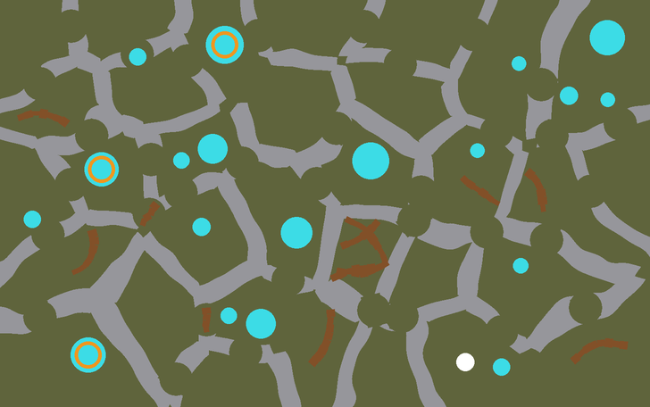
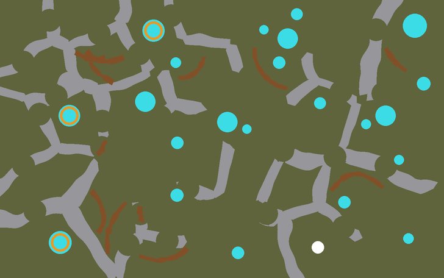
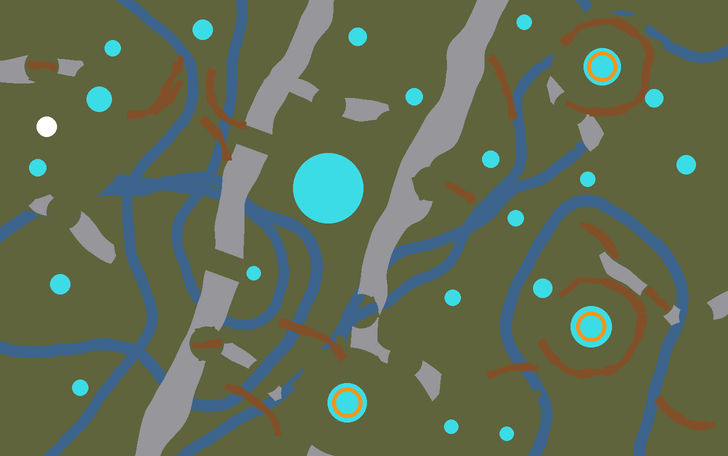
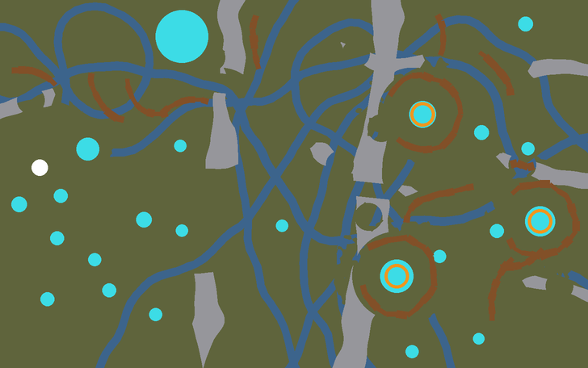
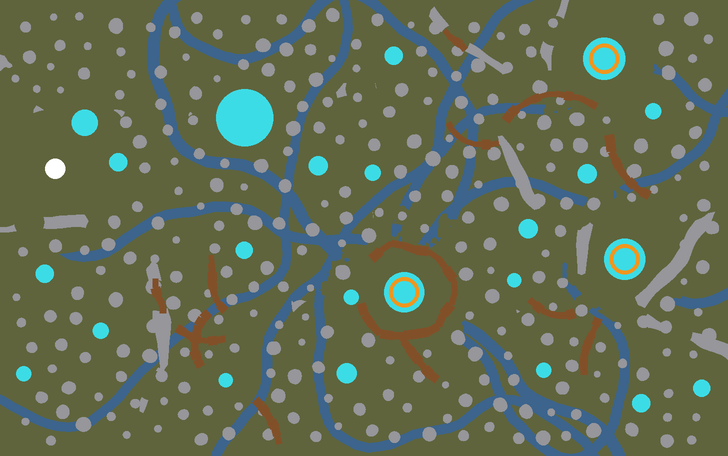
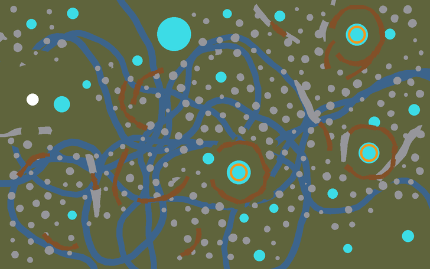
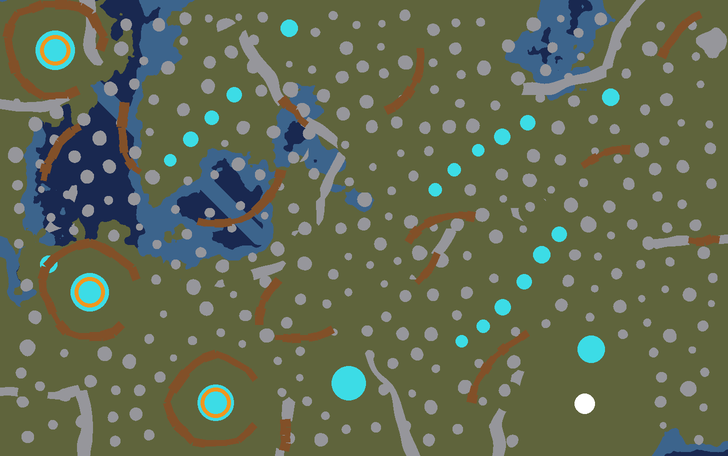
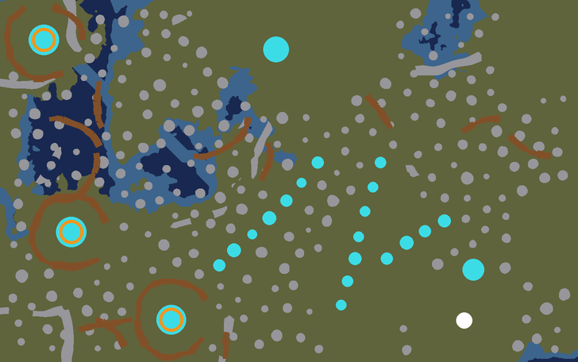
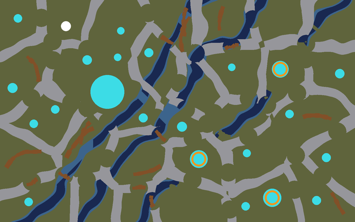
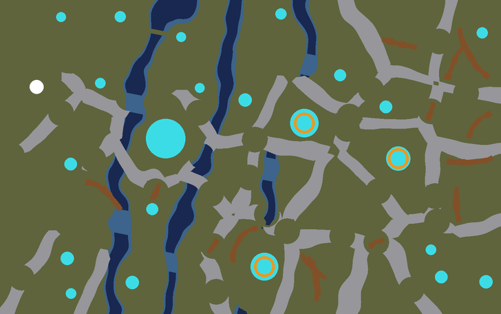
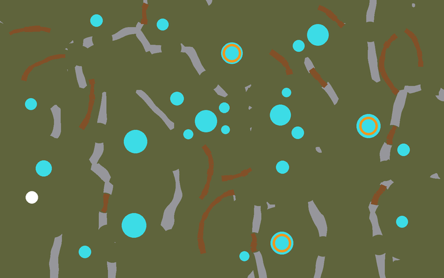
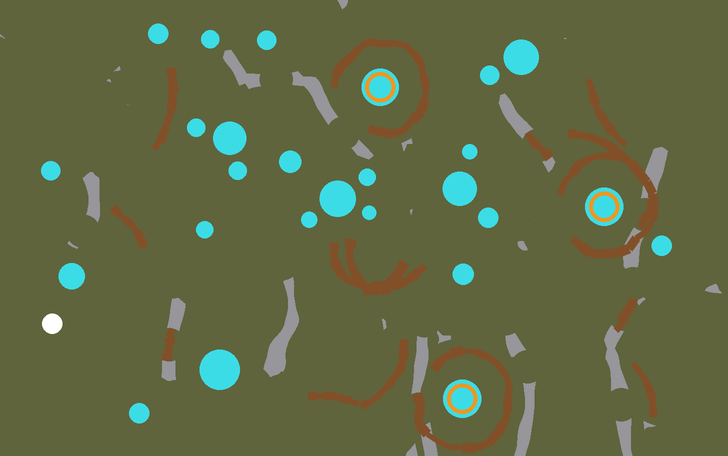